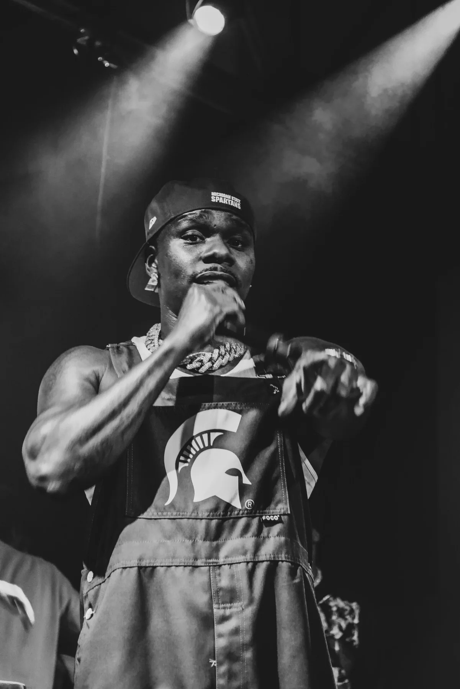

Anticipate the moment
Read the room, the performer, and the production so the right moments are captured—not chased.

Concerts · Performances · Events
High-energy coverage that preserves the scale, emotion, movement, and defining moments of live experiences.
Live event coverage moves fast. The work has to anticipate key moments, adapt to difficult lighting, and tell a complete story without interrupting the experience.
Antio Creative delivers performance images, crowd moments, portraits, venue details, and fast-turnaround content that artists, promoters, venues, and sponsors can publish immediately.
Click a DaBaby image to visit his Instagram, or a band image to visit Barstool Nashville.
Read the room, the performer, and the production so the right moments are captured—not chased.
Balance artist, audience, atmosphere, details, and scale to create a complete visual recap.
Provide a polished set that can support same-week promotion, press, social media, and future bookings.